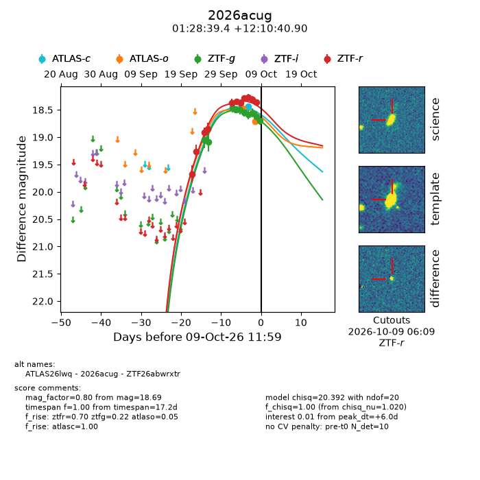
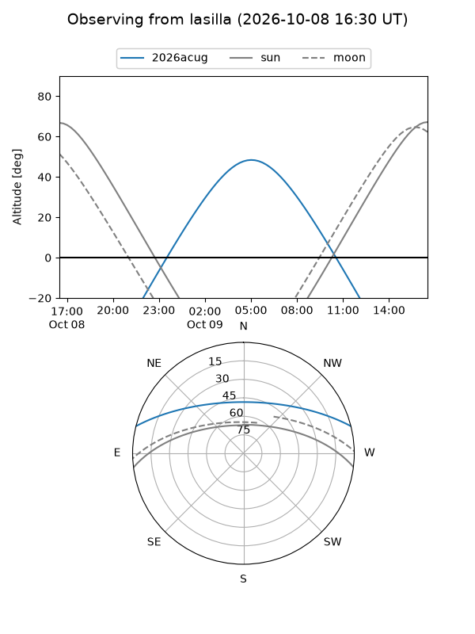
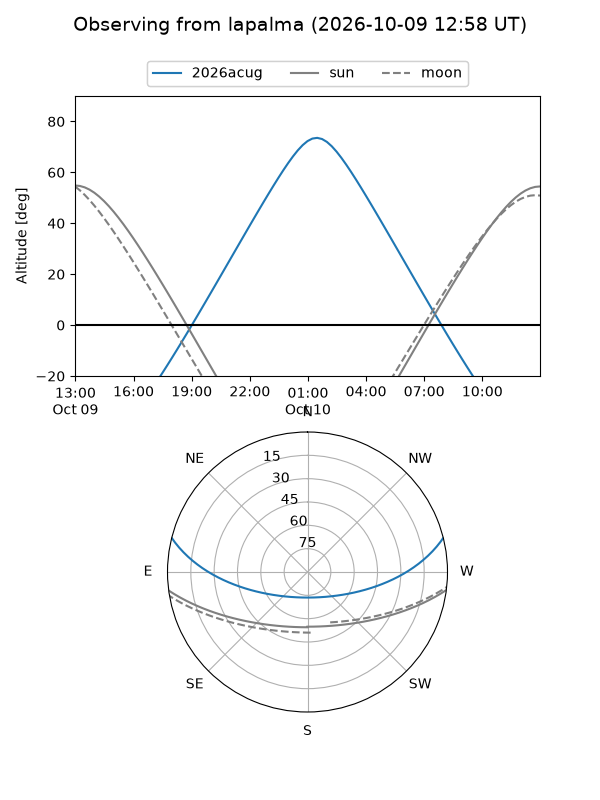
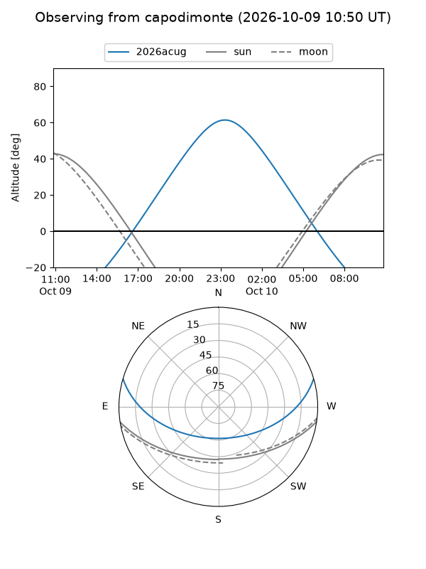
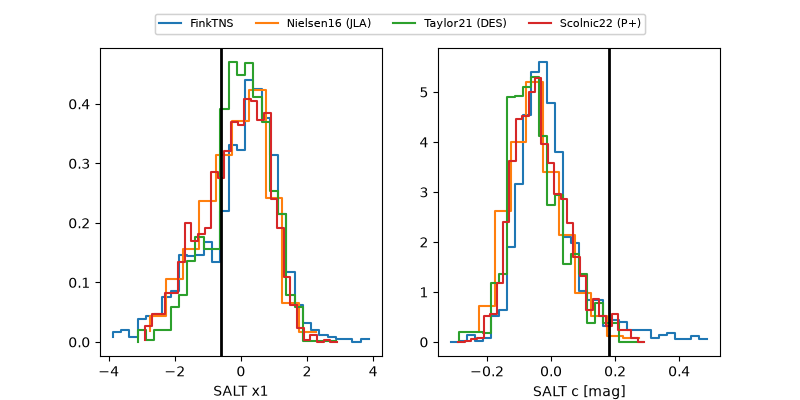

2026acug
Target 2026acug at 2026-10-09 12:01
Aliases and brokers:
FINK-ZTF: ztf.fink-portal.org/ZTF26abwrxtr
Lasair-ZTF: lasair-ztf.lsst.ac.uk/objects/ZTF26abwrxtr
ALeRCE-ZTF: alerce.online/object/ZTF26abwrxtr
YSE-PZ: ziggy.ucolick.org/yse/transient_detail/2026acug
TNS name: wis-tns.org/object/2026acug
Direct TNS query: direct search
alt names
ZTF26abwrxtr (ztf,fink_ztf)
2026acug (tns,yse)
ATLAS26lwq (atlas)
Coordinates:
equatorial (ra, dec) = 22.1642,+12.17803
equatorial (HMS+DMS) = 01:28:39.41,+12:10:40.90
galactic (l, b) = (137.0667,-49.66952)
Flags:
peak dt: +6.0
Photometry:
last atlasc=18.43, atlaso=18.70, ztfg=18.69, ztfr=18.35
2 atlasc, 2 atlaso, 10 ztfg, 11 ztfr detections
Lightcurve

Visibility



Additional plots
